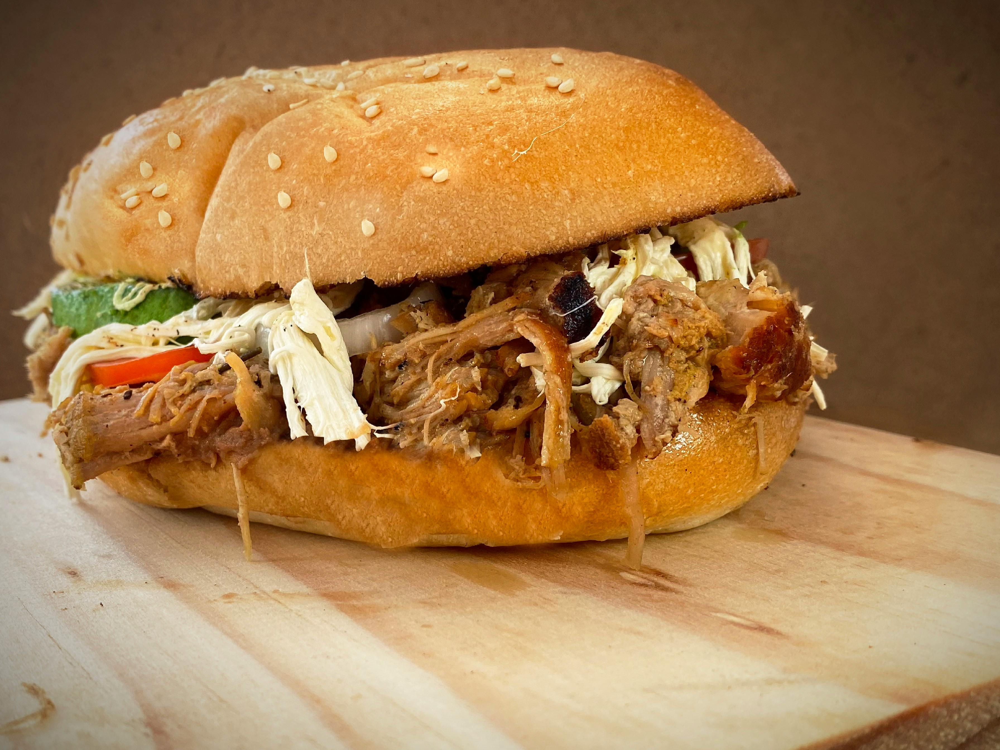

Home
Slow Cooker Texas Pulled Pork

Description
This recipe consists of pulled pork with a tangy barbeque sauce on a bun.
It makes around 8 sandwiches for the whole family to enjoy. The cook time
is around 5 hours, so be prepared to start cooking earlier in the day.
Ingredients
- 1 teaspoon of vegetable oil
- 4 pound pork shoulder roast
- 1 cup barbeque sauce
- 1 tablespoon yellow mustard
- 1 tablespoon Worcestershire sauce
- 1/2 cup apple cider vinegar
- 1/2 cup chicken broth
- 1/4 cup light brown sugar
- 1 tablespoon chili powder
- 2 crushed garlic cloves
- 1 1/2 teaspoons dried thyme
- 1 chopped onion
- 8 buttered hamburger buns
Steps
- Gather the ingredients
-
Pour vegetable oil into a slow cooker. Place pork roast into the slow
cooker. Pour in barbeque sauce, vinegar, and chicken broth. Stir in
brown sugar, yellow mustard, Worcestershire sauce, chili powder,
onion, garlic, and thyme. Cover and cook on Low for 10-12 hours or
High for 5-6 hours until pork shreds easily.
-
Remove pork from the slow cooker and shred the meat with two forks.
Return the shredded pork to the slow cooker and stir with the juices.
-
Spread butter on the inside of the buns. Toast the buns until golden
brown. Place the pulled pork into the toasted buns.
- Serve and enjoy!